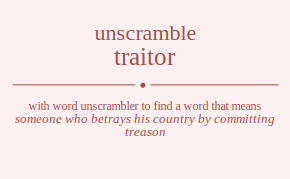

The word found after unscrambling traitor means that someone who betrays his country by committing treason, a person who says one thing and does another, .

The word found after unscrambling traitor means that someone who betrays his country by committing treason, a person who says one thing and does another, .
You can also find solutions for different combinations of letters in traitor like traitor traitro traiotr traiort trairto trairot tratior tratiro tratoir tratori tratrio tratroi traoitr traoirt traotir traotri traorit traorti trarito trariot trartio trartoi traroit traroti triator triatro triaotr triaort triarto triarot tritaor tritaro tritoar tritora tritrao tritroa trioatr trioart triotar triotra triorat triorta trirato triraot trirtao trirtoa triroat trirota trtaior trtairo trtaoir trtaori trtario trtaroi trtiaor trtiaro trtioar trtiora trtirao trtiroa trtoair trtoari trtoiar trtoira trtorai trtoria trtraio trtraoi trtriao trtrioa trtroai trtroia troaitr troairt troatir troatri troarit troarti troiatr troiart troitar troitra troirat troirta trotair trotari trotiar trotira trotrai trotria trorait trorati troriat trorita trortai trortia trraito trraiot trratio trratoi trraoit trraoti trriato trriaot trritao trritoa trrioat trriota trrtaio trrtaoi trrtiao trrtioa trrtoai trrtoia trroait trroati trroiat trroita trrotai trrotia taritor taritro tariotr tariort tarirto tarirot tartior tartiro tartoir tartori tartrio tartroi taroitr taroirt tarotir tarotri tarorit tarorti tarrito tarriot tarrtio tarrtoi tarroit tarroti tairtor tairtro tairotr tairort tairrto tairrot taitror taitrro taitorr taitorr taitrro taitror taiortr taiorrt taiotrr taiotrr taiorrt taiortr tairrto tairrot tairtro tairtor tairort tairotr tatrior tatriro tatroir tatrori tatrrio tatrroi tatiror tatirro tatiorr tatiorr tatirro tatiror tatorir tatorri tatoirr tatoirr tatorri tatorir tatrrio tatrroi tatriro tatrior tatrori tatroir taoritr taorirt taortir taortri taorrit taorrti taoirtr taoirrt taoitrr taoitrr taoirrt taoirtr taotrir taotrri taotirr taotirr taotrri taotrir taorrit taorrti taorirt taoritr taortri taortir tarrito tarriot tarrtio tarrtoi tarroit tarroti tarirto tarirot taritro taritor tariort tariotr tartrio tartroi tartiro tartior tartori tartoir tarorit tarorti taroirt taroitr tarotri tarotir tirator tiratro tiraotr tiraort tirarto tirarot tirtaor tirtaro tirtoar tirtora tirtrao tirtroa tiroatr tiroart tirotar tirotra tirorat tirorta tirrato tirraot tirrtao tirrtoa tirroat tirrota tiartor tiartro tiarotr tiarort tiarrto tiarrot tiatror tiatrro tiatorr tiatorr tiatrro tiatror tiaortr tiaorrt tiaotrr tiaotrr tiaorrt tiaortr tiarrto tiarrot tiartro tiartor tiarort tiarotr titraor titraro titroar titrora titrrao titrroa titaror titarro titaorr titaorr titarro titaror titorar titorra titoarr titoarr titorra titorar titrrao titrroa titraro titraor titrora titroar tioratr tiorart tiortar tiortra tiorrat tiorrta tioartr tioarrt tioatrr tioatrr tioarrt tioartr tiotrar tiotrra tiotarr tiotarr tiotrra tiotrar tiorrat tiorrta tiorart tioratr tiortra tiortar tirrato tirraot tirrtao tirrtoa tirroat tirrota tirarto tirarot tiratro tirator tiraort tiraotr tirtrao tirtroa tirtaro tirtaor tirtora tirtoar tirorat tirorta tiroart tiroatr tirotra tirotar ttraior ttrairo ttraoir ttraori ttrario ttraroi ttriaor ttriaro ttrioar ttriora ttrirao ttriroa ttroair ttroari ttroiar ttroira ttrorai ttroria ttrraio ttrraoi ttrriao ttrrioa ttrroai ttrroia ttarior ttariro ttaroir ttarori ttarrio ttarroi ttairor ttairro ttaiorr ttaiorr ttairro ttairor ttaorir ttaorri ttaoirr ttaoirr ttaorri ttaorir ttarrio ttarroi ttariro ttarior ttarori ttaroir ttiraor ttiraro ttiroar ttirora ttirrao ttirroa ttiaror ttiarro ttiaorr ttiaorr ttiarro ttiaror ttiorar ttiorra ttioarr ttioarr ttiorra ttiorar ttirrao ttirroa ttiraro ttiraor ttirora ttiroar ttorair ttorari ttoriar ttorira ttorrai ttorria ttoarir ttoarri ttoairr ttoairr ttoarri ttoarir ttoirar ttoirra ttoiarr ttoiarr ttoirra ttoirar ttorrai ttorria ttorari ttorair ttorira ttoriar ttrraio ttrraoi ttrriao ttrrioa ttrroai ttrroia ttrario ttraroi ttrairo ttraior ttraori ttraoir ttrirao ttriroa ttriaro ttriaor ttriora ttrioar ttrorai ttroria ttroari ttroair ttroira ttroiar toraitr torairt toratir toratri torarit torarti toriatr toriart toritar toritra torirat torirta tortair tortari tortiar tortira tortrai tortria torrait torrati torriat torrita torrtai torrtia toaritr toarirt toartir toartri toarrit toarrti toairtr toairrt toaitrr toaitrr toairrt toairtr toatrir toatrri toatirr toatirr toatrri toatrir toarrit toarrti toarirt toaritr toartri toartir toiratr toirart toirtar toirtra toirrat toirrta toiartr toiarrt toiatrr toiatrr toiarrt toiartr toitrar toitrra toitarr toitarr toitrra toitrar toirrat toirrta toirart toiratr toirtra toirtar totrair totrari totriar totrira totrrai totrria totarir totarri totairr totairr totarri totarir totirar totirra totiarr totiarr totirra totirar totrrai totrria totrari totrair totrira totriar torrait torrati torriat torrita torrtai torrtia torarit torarti torairt toraitr toratri toratir torirat torirta toriart toriatr toritra toritar tortrai tortria tortari tortair tortira tortiar trraito trraiot trratio trratoi trraoit trraoti trriato trriaot trritao trritoa trrioat trriota trrtaio trrtaoi trrtiao trrtioa trrtoai trrtoia trroait trroati trroiat trroita trrotai trrotia trarito trariot trartio trartoi traroit traroti trairto trairot traitro traitor traiort traiotr tratrio tratroi tratiro tratior tratori tratoir traorit traorti traoirt traoitr traotri traotir trirato triraot trirtao trirtoa triroat trirota triarto triarot triatro triator triaort triaotr tritrao tritroa tritaro tritaor tritora tritoar triorat triorta trioart trioatr triotra triotar trtraio trtraoi trtriao trtrioa trtroai trtroia trtario trtaroi trtairo trtaior trtaori trtaoir trtirao trtiroa trtiaro trtiaor trtiora trtioar trtorai trtoria trtoari trtoair trtoira trtoiar trorait trorati troriat trorita trortai trortia troarit troarti troairt troaitr troatri troatir troirat troirta troiart troiatr troitra troitar trotrai trotria trotari trotair trotira trotiar rtaitor rtaitro rtaiotr rtaiort rtairto rtairot rtatior rtatiro rtatoir rtatori rtatrio rtatroi rtaoitr rtaoirt rtaotir rtaotri rtaorit rtaorti rtarito rtariot rtartio rtartoi rtaroit rtaroti rtiator rtiatro rtiaotr rtiaort rtiarto rtiarot rtitaor rtitaro rtitoar rtitora rtitrao rtitroa rtioatr rtioart rtiotar rtiotra rtiorat rtiorta rtirato rtiraot rtirtao rtirtoa rtiroat rtirota rttaior rttairo rttaoir rttaori rttario rttaroi rttiaor rttiaro rttioar rttiora rttirao rttiroa rttoair rttoari rttoiar rttoira rttorai rttoria rttraio rttraoi rttriao rttrioa rttroai rttroia rtoaitr rtoairt rtoatir rtoatri rtoarit rtoarti rtoiatr rtoiart rtoitar rtoitra rtoirat rtoirta rtotair rtotari rtotiar rtotira rtotrai rtotria rtorait rtorati rtoriat rtorita rtortai rtortia rtraito rtraiot rtratio rtratoi rtraoit rtraoti rtriato rtriaot rtritao rtritoa rtrioat rtriota rtrtaio rtrtaoi rtrtiao rtrtioa rtrtoai rtrtoia rtroait rtroati rtroiat rtroita rtrotai rtrotia ratitor ratitro ratiotr ratiort ratirto ratirot rattior rattiro rattoir rattori rattrio rattroi ratoitr ratoirt ratotir ratotri ratorit ratorti ratrito ratriot ratrtio ratrtoi ratroit ratroti raittor raittro raitotr raitort raitrto raitrot raittor raittro raitotr raitort raitrto raitrot raiottr raiotrt raiottr raiotrt raiortt raiortt rairtto rairtot rairtto rairtot rairott rairott rattior rattiro rattoir rattori rattrio rattroi ratitor ratitro ratiotr ratiort ratirto ratirot ratotir ratotri ratoitr ratoirt ratorti ratorit ratrtio ratrtoi ratrito ratriot ratroti ratroit raotitr raotirt raottir raottri raotrit raotrti raoittr raoitrt raoittr raoitrt raoirtt raoirtt raottir raottri raotitr raotirt raotrti raotrit raortit raortti raoritt raoritt raortti raortit rartito rartiot rarttio rarttoi rartoit rartoti raritto raritot raritto raritot rariott rariott rarttio rarttoi rartito rartiot rartoti rartoit rarotit rarotti raroitt raroitt rarotti rarotit ritator ritatro ritaotr ritaort ritarto ritarot rittaor rittaro rittoar rittora rittrao rittroa ritoatr ritoart ritotar ritotra ritorat ritorta ritrato ritraot ritrtao ritrtoa ritroat ritrota riattor riattro riatotr riatort riatrto riatrot riattor riattro riatotr riatort riatrto riatrot riaottr riaotrt riaottr riaotrt riaortt riaortt riartto riartot riartto riartot riarott riarott rittaor rittaro rittoar rittora rittrao rittroa ritator ritatro ritaotr ritaort ritarto ritarot ritotar ritotra ritoatr ritoart ritorta ritorat ritrtao ritrtoa ritrato ritraot ritrota ritroat riotatr riotart riottar riottra riotrat riotrta rioattr rioatrt rioattr rioatrt rioartt rioartt riottar riottra riotatr riotart riotrta riotrat riortat riortta rioratt rioratt riortta riortat rirtato rirtaot rirttao rirttoa rirtoat rirtota riratto riratot riratto riratot riraott riraott rirttao rirttoa rirtato rirtaot rirtota rirtoat rirotat rirotta riroatt riroatt rirotta rirotat rttaior rttairo rttaoir rttaori rttario rttaroi rttiaor rttiaro rttioar rttiora rttirao rttiroa rttoair rttoari rttoiar rttoira rttorai rttoria rttraio rttraoi rttriao rttrioa rttroai rttroia rtatior rtatiro rtatoir rtatori rtatrio rtatroi rtaitor rtaitro rtaiotr rtaiort rtairto rtairot rtaotir rtaotri rtaoitr rtaoirt rtaorti rtaorit rtartio rtartoi rtarito rtariot rtaroti rtaroit rtitaor rtitaro rtitoar rtitora rtitrao rtitroa rtiator rtiatro rtiaotr rtiaort rtiarto rtiarot rtiotar rtiotra rtioatr rtioart rtiorta rtiorat rtirtao rtirtoa rtirato rtiraot rtirota rtiroat rtotair rtotari rtotiar rtotira rtotrai rtotria rtoatir rtoatri rtoaitr rtoairt rtoarti rtoarit rtoitar rtoitra rtoiatr rtoiart rtoirta rtoirat rtortai rtortia rtorati rtorait rtorita rtoriat rtrtaio rtrtaoi rtrtiao rtrtioa rtrtoai rtrtoia rtratio rtratoi rtraito rtraiot rtraoti rtraoit rtritao rtritoa rtriato rtriaot rtriota rtrioat rtrotai rtrotia rtroati rtroait rtroita rtroiat rotaitr rotairt rotatir rotatri rotarit rotarti rotiatr rotiart rotitar rotitra rotirat rotirta rottair rottari rottiar rottira rottrai rottria rotrait rotrati rotriat rotrita rotrtai rotrtia roatitr roatirt roattir roattri roatrit roatrti roaittr roaitrt roaittr roaitrt roairtt roairtt roattir roattri roatitr roatirt roatrti roatrit roartit roartti roaritt roaritt roartti roartit roitatr roitart roittar roittra roitrat roitrta roiattr roiatrt roiattr roiatrt roiartt roiartt roittar roittra roitatr roitart roitrta roitrat roirtat roirtta roiratt roiratt roirtta roirtat rottair rottari rottiar rottira rottrai rottria rotatir rotatri rotaitr rotairt rotarti rotarit rotitar rotitra rotiatr rotiart rotirta rotirat rotrtai rotrtia rotrati rotrait rotrita rotriat rortait rortati rortiat rortita rorttai rorttia roratit roratti roraitt roraitt roratti roratit roritat roritta roriatt roriatt roritta roritat rorttai rorttia rortati rortait rortita rortiat rrtaito rrtaiot rrtatio rrtatoi rrtaoit rrtaoti rrtiato rrtiaot rrtitao rrtitoa rrtioat rrtiota rrttaio rrttaoi rrttiao rrttioa rrttoai rrttoia rrtoait rrtoati rrtoiat rrtoita rrtotai rrtotia rratito rratiot rrattio rrattoi rratoit rratoti rraitto rraitot rraitto rraitot rraiott rraiott rrattio rrattoi rratito rratiot rratoti rratoit rraotit rraotti rraoitt rraoitt rraotti rraotit rritato rritaot rrittao rrittoa rritoat rritota rriatto rriatot rriatto rriatot rriaott rriaott rrittao rrittoa rritato rritaot rritota rritoat rriotat rriotta rrioatt rrioatt rriotta rriotat rrttaio rrttaoi rrttiao rrttioa rrttoai rrttoia rrtatio rrtatoi rrtaito rrtaiot rrtaoti rrtaoit rrtitao rrtitoa rrtiato rrtiaot rrtiota rrtioat rrtotai rrtotia rrtoati rrtoait rrtoita rrtoiat rrotait rrotati rrotiat rrotita rrottai rrottia rroatit rroatti rroaitt rroaitt rroatti rroatit rroitat rroitta rroiatt rroiatt rroitta rroitat rrottai rrottia rrotati rrotait rrotita rrotiat atritor atritro atriotr atriort atrirto atrirot atrtior atrtiro atrtoir atrtori atrtrio atrtroi atroitr atroirt atrotir atrotri atrorit atrorti atrrito atrriot atrrtio atrrtoi atrroit atrroti atirtor atirtro atirotr atirort atirrto atirrot atitror atitrro atitorr atitorr atitrro atitror atiortr atiorrt atiotrr atiotrr atiorrt atiortr atirrto atirrot atirtro atirtor atirort atirotr attrior attriro attroir attrori attrrio attrroi attiror attirro attiorr attiorr attirro attiror attorir attorri attoirr attoirr attorri attorir attrrio attrroi attriro attrior attrori attroir atoritr atorirt atortir atortri atorrit atorrti atoirtr atoirrt atoitrr atoitrr atoirrt atoirtr atotrir atotrri atotirr atotirr atotrri atotrir atorrit atorrti atorirt atoritr atortri atortir atrrito atrriot atrrtio atrrtoi atrroit atrroti atrirto atrirot atritro atritor atriort atriotr atrtrio atrtroi atrtiro atrtior atrtori atrtoir atrorit atrorti atroirt atroitr atrotri atrotir artitor artitro artiotr artiort artirto artirot arttior arttiro arttoir arttori arttrio arttroi artoitr artoirt artotir artotri artorit artorti artrito artriot artrtio artrtoi artroit artroti arittor arittro aritotr aritort aritrto aritrot arittor arittro aritotr aritort aritrto aritrot ariottr ariotrt ariottr ariotrt ariortt ariortt arirtto arirtot arirtto arirtot arirott arirott arttior arttiro arttoir arttori arttrio arttroi artitor artitro artiotr artiort artirto artirot artotir artotri artoitr artoirt artorti artorit artrtio artrtoi artrito artriot artroti artroit arotitr arotirt arottir arottri arotrit arotrti aroittr aroitrt aroittr aroitrt aroirtt aroirtt arottir arottri arotitr arotirt arotrti arotrit arortit arortti aroritt aroritt arortti arortit arrtito arrtiot arrttio arrttoi arrtoit arrtoti arritto arritot arritto arritot arriott arriott arrttio arrttoi arrtito arrtiot arrtoti arrtoit arrotit arrotti arroitt arroitt arrotti arrotit aitrtor aitrtro aitrotr aitrort aitrrto aitrrot aittror aittrro aittorr aittorr aittrro aittror aitortr aitorrt aitotrr aitotrr aitorrt aitortr aitrrto aitrrot aitrtro aitrtor aitrort aitrotr airttor airttro airtotr airtort airtrto airtrot airttor airttro airtotr airtort airtrto airtrot airottr airotrt airottr airotrt airortt airortt airrtto airrtot airrtto airrtot airrott airrott aittror aittrro aittorr aittorr aittrro aittror aitrtor aitrtro aitrotr aitrort aitrrto aitrrot aitotrr aitotrr aitortr aitorrt aitortr aitorrt aitrtro aitrtor aitrrto aitrrot aitrotr aitrort aiotrtr aiotrrt aiottrr aiottrr aiotrrt aiotrtr aiorttr aiortrt aiorttr aiortrt aiorrtt aiorrtt aiottrr aiottrr aiotrtr aiotrrt aiotrtr aiotrrt aiortrt aiorttr aiorrtt aiorrtt aiorttr aiortrt airtrto airtrot airttro airttor airtort airtotr airrtto airrtot airrtto airrtot airrott airrott airttro airttor airtrto airtrot airtotr airtort airotrt airottr airortt airortt airottr airotrt attrior attriro attroir attrori attrrio attrroi attiror attirro attiorr attiorr attirro attiror attorir attorri attoirr attoirr attorri attorir attrrio attrroi attriro attrior attrori attroir atrtior atrtiro atrtoir atrtori atrtrio atrtroi atritor atritro atriotr atriort atrirto atrirot atrotir atrotri atroitr atroirt atrorti atrorit atrrtio atrrtoi atrrito atrriot atrroti atrroit atitror atitrro atitorr atitorr atitrro atitror atirtor atirtro atirotr atirort atirrto atirrot atiotrr atiotrr atiortr atiorrt atiortr atiorrt atirtro atirtor atirrto atirrot atirotr atirort atotrir atotrri atotirr atotirr atotrri atotrir atortir atortri atoritr atorirt atorrti atorrit atoitrr atoitrr atoirtr atoirrt atoirtr atoirrt atortri atortir atorrti atorrit atoritr atorirt atrtrio atrtroi atrtiro atrtior atrtori atrtoir atrrtio atrrtoi atrrito atrriot atrroti atrroit atritro atritor atrirto atrirot atriotr atriort atrotri atrotir atrorti atrorit atroitr atroirt aotritr aotrirt aotrtir aotrtri aotrrit aotrrti aotirtr aotirrt aotitrr aotitrr aotirrt aotirtr aottrir aottrri aottirr aottirr aottrri aottrir aotrrit aotrrti aotrirt aotritr aotrtri aotrtir aortitr aortirt aorttir aorttri aortrit aortrti aorittr aoritrt aorittr aoritrt aorirtt aorirtt aorttir aorttri aortitr aortirt aortrti aortrit aorrtit aorrtti aorritt aorritt aorrtti aorrtit aoitrtr aoitrrt aoittrr aoittrr aoitrrt aoitrtr aoirttr aoirtrt aoirttr aoirtrt aoirrtt aoirrtt aoittrr aoittrr aoitrtr aoitrrt aoitrtr aoitrrt aoirtrt aoirttr aoirrtt aoirrtt aoirttr aoirtrt aottrir aottrri aottirr aottirr aottrri aottrir aotrtir aotrtri aotritr aotrirt aotrrti aotrrit aotitrr aotitrr aotirtr aotirrt aotirtr aotirrt aotrtri aotrtir aotrrti aotrrit aotritr aotrirt aortrit aortrti aortirt aortitr aorttri aorttir aorrtit aorrtti aorritt aorritt aorrtti aorrtit aoritrt aorittr aorirtt aorirtt aorittr aoritrt aorttri aorttir aortrti aortrit aortitr aortirt artrito artriot artrtio artrtoi artroit artroti artirto artirot artitro artitor artiort artiotr arttrio arttroi arttiro arttior arttori arttoir artorit artorti artoirt artoitr artotri artotir arrtito arrtiot arrttio arrttoi arrtoit arrtoti arritto arritot arritto arritot arriott arriott arrttio arrttoi arrtito arrtiot arrtoti arrtoit arrotit arrotti arroitt arroitt arrotti arrotit aritrto aritrot arittro arittor aritort aritotr arirtto arirtot arirtto arirtot arirott arirott arittro arittor aritrto aritrot aritotr aritort ariotrt ariottr ariortt ariortt ariottr ariotrt arttrio arttroi arttiro arttior arttori arttoir artrtio artrtoi artrito artriot artroti artroit artitro artitor artirto artirot artiotr artiort artotri artotir artorti artorit artoitr artoirt arotrit arotrti arotirt arotitr arottri arottir arortit arortti aroritt aroritt arortti arortit aroitrt aroittr aroirtt aroirtt aroittr aroitrt arottri arottir arotrti arotrit arotitr arotirt itrator itratro itraotr itraort itrarto itrarot itrtaor itrtaro itrtoar itrtora itrtrao itrtroa itroatr itroart itrotar itrotra itrorat itrorta itrrato itrraot itrrtao itrrtoa itrroat itrrota itartor itartro itarotr itarort itarrto itarrot itatror itatrro itatorr itatorr itatrro itatror itaortr itaorrt itaotrr itaotrr itaorrt itaortr itarrto itarrot itartro itartor itarort itarotr ittraor ittraro ittroar ittrora ittrrao ittrroa ittaror ittarro ittaorr ittaorr ittarro ittaror ittorar ittorra ittoarr ittoarr ittorra ittorar ittrrao ittrroa ittraro ittraor ittrora ittroar itoratr itorart itortar itortra itorrat itorrta itoartr itoarrt itoatrr itoatrr itoarrt itoartr itotrar itotrra itotarr itotarr itotrra itotrar itorrat itorrta itorart itoratr itortra itortar itrrato itrraot itrrtao itrrtoa itrroat itrrota itrarto itrarot itratro itrator itraort itraotr itrtrao itrtroa itrtaro itrtaor itrtora itrtoar itrorat itrorta itroart itroatr itrotra itrotar irtator irtatro irtaotr irtaort irtarto irtarot irttaor irttaro irttoar irttora irttrao irttroa irtoatr irtoart irtotar irtotra irtorat irtorta irtrato irtraot irtrtao irtrtoa irtroat irtrota irattor irattro iratotr iratort iratrto iratrot irattor irattro iratotr iratort iratrto iratrot iraottr iraotrt iraottr iraotrt iraortt iraortt irartto irartot irartto irartot irarott irarott irttaor irttaro irttoar irttora irttrao irttroa irtator irtatro irtaotr irtaort irtarto irtarot irtotar irtotra irtoatr irtoart irtorta irtorat irtrtao irtrtoa irtrato irtraot irtrota irtroat irotatr irotart irottar irottra irotrat irotrta iroattr iroatrt iroattr iroatrt iroartt iroartt irottar irottra irotatr irotart irotrta irotrat irortat irortta iroratt iroratt irortta irortat irrtato irrtaot irrttao irrttoa irrtoat irrtota irratto irratot irratto irratot irraott irraott irrttao irrttoa irrtato irrtaot irrtota irrtoat irrotat irrotta irroatt irroatt irrotta irrotat iatrtor iatrtro iatrotr iatrort iatrrto iatrrot iattror iattrro iattorr iattorr iattrro iattror iatortr iatorrt iatotrr iatotrr iatorrt iatortr iatrrto iatrrot iatrtro iatrtor iatrort iatrotr iarttor iarttro iartotr iartort iartrto iartrot iarttor iarttro iartotr iartort iartrto iartrot iarottr iarotrt iarottr iarotrt iarortt iarortt iarrtto iarrtot iarrtto iarrtot iarrott iarrott iattror iattrro iattorr iattorr iattrro iattror iatrtor iatrtro iatrotr iatrort iatrrto iatrrot iatotrr iatotrr iatortr iatorrt iatortr iatorrt iatrtro iatrtor iatrrto iatrrot iatrotr iatrort iaotrtr iaotrrt iaottrr iaottrr iaotrrt iaotrtr iaorttr iaortrt iaorttr iaortrt iaorrtt iaorrtt iaottrr iaottrr iaotrtr iaotrrt iaotrtr iaotrrt iaortrt iaorttr iaorrtt iaorrtt iaorttr iaortrt iartrto iartrot iarttro iarttor iartort iartotr iarrtto iarrtot iarrtto iarrtot iarrott iarrott iarttro iarttor iartrto iartrot iartotr iartort iarotrt iarottr iarortt iarortt iarottr iarotrt ittraor ittraro ittroar ittrora ittrrao ittrroa ittaror ittarro ittaorr ittaorr ittarro ittaror ittorar ittorra ittoarr ittoarr ittorra ittorar ittrrao ittrroa ittraro ittraor ittrora ittroar itrtaor itrtaro itrtoar itrtora itrtrao itrtroa itrator itratro itraotr itraort itrarto itrarot itrotar itrotra itroatr itroart itrorta itrorat itrrtao itrrtoa itrrato itrraot itrrota itrroat itatror itatrro itatorr itatorr itatrro itatror itartor itartro itarotr itarort itarrto itarrot itaotrr itaotrr itaortr itaorrt itaortr itaorrt itartro itartor itarrto itarrot itarotr itarort itotrar itotrra itotarr itotarr itotrra itotrar itortar itortra itoratr itorart itorrta itorrat itoatrr itoatrr itoartr itoarrt itoartr itoarrt itortra itortar itorrta itorrat itoratr itorart itrtrao itrtroa itrtaro itrtaor itrtora itrtoar itrrtao itrrtoa itrrato itrraot itrrota itrroat itratro itrator itrarto itrarot itraotr itraort itrotra itrotar itrorta itrorat itroatr itroart iotratr iotrart iotrtar iotrtra iotrrat iotrrta iotartr iotarrt iotatrr iotatrr iotarrt iotartr iottrar iottrra iottarr iottarr iottrra iottrar iotrrat iotrrta iotrart iotratr iotrtra iotrtar iortatr iortart iorttar iorttra iortrat iortrta iorattr ioratrt iorattr ioratrt iorartt iorartt iorttar iorttra iortatr iortart iortrta iortrat iorrtat iorrtta iorratt iorratt iorrtta iorrtat ioatrtr ioatrrt ioattrr ioattrr ioatrrt ioatrtr ioarttr ioartrt ioarttr ioartrt ioarrtt ioarrtt ioattrr ioattrr ioatrtr ioatrrt ioatrtr ioatrrt ioartrt ioarttr ioarrtt ioarrtt ioarttr ioartrt iottrar iottrra iottarr iottarr iottrra iottrar iotrtar iotrtra iotratr iotrart iotrrta iotrrat iotatrr iotatrr iotartr iotarrt iotartr iotarrt iotrtra iotrtar iotrrta iotrrat iotratr iotrart iortrat iortrta iortart iortatr iorttra iorttar iorrtat iorrtta iorratt iorratt iorrtta iorrtat ioratrt iorattr iorartt iorartt iorattr ioratrt iorttra iorttar iortrta iortrat iortatr iortart irtrato irtraot irtrtao irtrtoa irtroat irtrota irtarto irtarot irtatro irtator irtaort irtaotr irttrao irttroa irttaro irttaor irttora irttoar irtorat irtorta irtoart irtoatr irtotra irtotar irrtato irrtaot irrttao irrttoa irrtoat irrtota irratto irratot irratto irratot irraott irraott irrttao irrttoa irrtato irrtaot irrtota irrtoat irrotat irrotta irroatt irroatt irrotta irrotat iratrto iratrot irattro irattor iratort iratotr irartto irartot irartto irartot irarott irarott irattro irattor iratrto iratrot iratotr iratort iraotrt iraottr iraortt iraortt iraottr iraotrt irttrao irttroa irttaro irttaor irttora irttoar irtrtao irtrtoa irtrato irtraot irtrota irtroat irtatro irtator irtarto irtarot irtaotr irtaort irtotra irtotar irtorta irtorat irtoatr irtoart irotrat irotrta irotart irotatr irottra irottar irortat irortta iroratt iroratt irortta irortat iroatrt iroattr iroartt iroartt iroattr iroatrt irottra irottar irotrta irotrat irotatr irotart ttraior ttrairo ttraoir ttraori ttrario ttraroi ttriaor ttriaro ttrioar ttriora ttrirao ttriroa ttroair ttroari ttroiar ttroira ttrorai ttroria ttrraio ttrraoi ttrriao ttrrioa ttrroai ttrroia ttarior ttariro ttaroir ttarori ttarrio ttarroi ttairor ttairro ttaiorr ttaiorr ttairro ttairor ttaorir ttaorri ttaoirr ttaoirr ttaorri ttaorir ttarrio ttarroi ttariro ttarior ttarori ttaroir ttiraor ttiraro ttiroar ttirora ttirrao ttirroa ttiaror ttiarro ttiaorr ttiaorr ttiarro ttiaror ttiorar ttiorra ttioarr ttioarr ttiorra ttiorar ttirrao ttirroa ttiraro ttiraor ttirora ttiroar ttorair ttorari ttoriar ttorira ttorrai ttorria ttoarir ttoarri ttoairr ttoairr ttoarri ttoarir ttoirar ttoirra ttoiarr ttoiarr ttoirra ttoirar ttorrai ttorria ttorari ttorair ttorira ttoriar ttrraio ttrraoi ttrriao ttrrioa ttrroai ttrroia ttrario ttraroi ttrairo ttraior ttraori ttraoir ttrirao ttriroa ttriaro ttriaor ttriora ttrioar ttrorai ttroria ttroari ttroair ttroira ttroiar trtaior trtairo trtaoir trtaori trtario trtaroi trtiaor trtiaro trtioar trtiora trtirao trtiroa trtoair trtoari trtoiar trtoira trtorai trtoria trtraio trtraoi trtriao trtrioa trtroai trtroia tratior tratiro tratoir tratori tratrio tratroi traitor traitro traiotr traiort trairto trairot traotir traotri traoitr traoirt traorti traorit trartio trartoi trarito trariot traroti traroit tritaor tritaro tritoar tritora tritrao tritroa triator triatro triaotr triaort triarto triarot triotar triotra trioatr trioart triorta triorat trirtao trirtoa trirato triraot trirota triroat trotair trotari trotiar trotira trotrai trotria troatir troatri troaitr troairt troarti troarit troitar troitra troiatr troiart troirta troirat trortai trortia trorati trorait trorita troriat trrtaio trrtaoi trrtiao trrtioa trrtoai trrtoia trratio trratoi trraito trraiot trraoti trraoit trritao trritoa trriato trriaot trriota trrioat trrotai trrotia trroati trroait trroita trroiat tatrior tatriro tatroir tatrori tatrrio tatrroi tatiror tatirro tatiorr tatiorr tatirro tatiror tatorir tatorri tatoirr tatoirr tatorri tatorir tatrrio tatrroi tatriro tatrior tatrori tatroir tartior tartiro tartoir tartori tartrio tartroi taritor taritro tariotr tariort tarirto tarirot tarotir tarotri taroitr taroirt tarorti tarorit tarrtio tarrtoi tarrito tarriot tarroti tarroit taitror taitrro taitorr taitorr taitrro taitror tairtor tairtro tairotr tairort tairrto tairrot taiotrr taiotrr taiortr taiorrt taiortr taiorrt tairtro tairtor tairrto tairrot tairotr tairort taotrir taotrri taotirr taotirr taotrri taotrir taortir taortri taoritr taorirt taorrti taorrit taoitrr taoitrr taoirtr taoirrt taoirtr taoirrt taortri taortir taorrti taorrit taoritr taorirt tartrio tartroi tartiro tartior tartori tartoir tarrtio tarrtoi tarrito tarriot tarroti tarroit taritro taritor tarirto tarirot tariotr tariort tarotri tarotir tarorti tarorit taroitr taroirt titraor titraro titroar titrora titrrao titrroa titaror titarro titaorr titaorr titarro titaror titorar titorra titoarr titoarr titorra titorar titrrao titrroa titraro titraor titrora titroar tirtaor tirtaro tirtoar tirtora tirtrao tirtroa tirator tiratro tiraotr tiraort tirarto tirarot tirotar tirotra tiroatr tiroart tirorta tirorat tirrtao tirrtoa tirrato tirraot tirrota tirroat tiatror tiatrro tiatorr tiatorr tiatrro tiatror tiartor tiartro tiarotr tiarort tiarrto tiarrot tiaotrr tiaotrr tiaortr tiaorrt tiaortr tiaorrt tiartro tiartor tiarrto tiarrot tiarotr tiarort tiotrar tiotrra tiotarr tiotarr tiotrra tiotrar tiortar tiortra tioratr tiorart tiorrta tiorrat tioatrr tioatrr tioartr tioarrt tioartr tioarrt tiortra tiortar tiorrta tiorrat tioratr tiorart tirtrao tirtroa tirtaro tirtaor tirtora tirtoar tirrtao tirrtoa tirrato tirraot tirrota tirroat tiratro tirator tirarto tirarot tiraotr tiraort tirotra tirotar tirorta tirorat tiroatr tiroart totrair totrari totriar totrira totrrai totrria totarir totarri totairr totairr totarri totarir totirar totirra totiarr totiarr totirra totirar totrrai totrria totrari totrair totrira totriar tortair tortari tortiar tortira tortrai tortria toratir toratri toraitr torairt torarti torarit toritar toritra toriatr toriart torirta torirat torrtai torrtia torrati torrait torrita torriat toatrir toatrri toatirr toatirr toatrri toatrir toartir toartri toaritr toarirt toarrti toarrit toaitrr toaitrr toairtr toairrt toairtr toairrt toartri toartir toarrti toarrit toaritr toarirt toitrar toitrra toitarr toitarr toitrra toitrar toirtar toirtra toiratr toirart toirrta toirrat toiatrr toiatrr toiartr toiarrt toiartr toiarrt toirtra toirtar toirrta toirrat toiratr toirart tortrai tortria tortari tortair tortira tortiar torrtai torrtia torrati torrait torrita torriat toratri toratir torarti torarit toraitr torairt toritra toritar torirta torirat toriatr toriart trtraio trtraoi trtriao trtrioa trtroai trtroia trtario trtaroi trtairo trtaior trtaori trtaoir trtirao trtiroa trtiaro trtiaor trtiora trtioar trtorai trtoria trtoari trtoair trtoira trtoiar trrtaio trrtaoi trrtiao trrtioa trrtoai trrtoia trratio trratoi trraito trraiot trraoti trraoit trritao trritoa trriato trriaot trriota trrioat trrotai trrotia trroati trroait trroita trroiat tratrio tratroi tratiro tratior tratori tratoir trartio trartoi trarito trariot traroti traroit traitro traitor trairto trairot traiotr traiort traotri traotir traorti traorit traoitr traoirt tritrao tritroa tritaro tritaor tritora tritoar trirtao trirtoa trirato triraot trirota triroat triatro triator triarto triarot triaotr triaort triotra triotar triorta triorat trioatr trioart trotrai trotria trotari trotair trotira trotiar trortai trortia trorati trorait trorita troriat troatri troatir troarti troarit troaitr troairt troitra troitar troirta troirat troiatr troiart otraitr otrairt otratir otratri otrarit otrarti otriatr otriart otritar otritra otrirat otrirta otrtair otrtari otrtiar otrtira otrtrai otrtria otrrait otrrati otrriat otrrita otrrtai otrrtia otaritr otarirt otartir otartri otarrit otarrti otairtr otairrt otaitrr otaitrr otairrt otairtr otatrir otatrri otatirr otatirr otatrri otatrir otarrit otarrti otarirt otaritr otartri otartir otiratr otirart otirtar otirtra otirrat otirrta otiartr otiarrt otiatrr otiatrr otiarrt otiartr otitrar otitrra otitarr otitarr otitrra otitrar otirrat otirrta otirart otiratr otirtra otirtar ottrair ottrari ottriar ottrira ottrrai ottrria ottarir ottarri ottairr ottairr ottarri ottarir ottirar ottirra ottiarr ottiarr ottirra ottirar ottrrai ottrria ottrari ottrair ottrira ottriar otrrait otrrati otrriat otrrita otrrtai otrrtia otrarit otrarti otrairt otraitr otratri otratir otrirat otrirta otriart otriatr otritra otritar otrtrai otrtria otrtari otrtair otrtira otrtiar ortaitr ortairt ortatir ortatri ortarit ortarti ortiatr ortiart ortitar ortitra ortirat ortirta orttair orttari orttiar orttira orttrai orttria ortrait ortrati ortriat ortrita ortrtai ortrtia oratitr oratirt orattir orattri oratrit oratrti oraittr oraitrt oraittr oraitrt orairtt orairtt orattir orattri oratitr oratirt oratrti oratrit orartit orartti oraritt oraritt orartti orartit oritatr oritart orittar orittra oritrat oritrta oriattr oriatrt oriattr oriatrt oriartt oriartt orittar orittra oritatr oritart oritrta oritrat orirtat orirtta oriratt oriratt orirtta orirtat orttair orttari orttiar orttira orttrai orttria ortatir ortatri ortaitr ortairt ortarti ortarit ortitar ortitra ortiatr ortiart ortirta ortirat ortrtai ortrtia ortrati ortrait ortrita ortriat orrtait orrtati orrtiat orrtita orrttai orrttia orratit orratti orraitt orraitt orratti orratit orritat orritta orriatt orriatt orritta orritat orrttai orrttia orrtati orrtait orrtita orrtiat oatritr oatrirt oatrtir oatrtri oatrrit oatrrti oatirtr oatirrt oatitrr oatitrr oatirrt oatirtr oattrir oattrri oattirr oattirr oattrri oattrir oatrrit oatrrti oatrirt oatritr oatrtri oatrtir oartitr oartirt oarttir oarttri oartrit oartrti oarittr oaritrt oarittr oaritrt oarirtt oarirtt oarttir oarttri oartitr oartirt oartrti oartrit oarrtit oarrtti oarritt oarritt oarrtti oarrtit oaitrtr oaitrrt oaittrr oaittrr oaitrrt oaitrtr oairttr oairtrt oairttr oairtrt oairrtt oairrtt oaittrr oaittrr oaitrtr oaitrrt oaitrtr oaitrrt oairtrt oairttr oairrtt oairrtt oairttr oairtrt oattrir oattrri oattirr oattirr oattrri oattrir oatrtir oatrtri oatritr oatrirt oatrrti oatrrit oatitrr oatitrr oatirtr oatirrt oatirtr oatirrt oatrtri oatrtir oatrrti oatrrit oatritr oatrirt oartrit oartrti oartirt oartitr oarttri oarttir oarrtit oarrtti oarritt oarritt oarrtti oarrtit oaritrt oarittr oarirtt oarirtt oarittr oaritrt oarttri oarttir oartrti oartrit oartitr oartirt oitratr oitrart oitrtar oitrtra oitrrat oitrrta oitartr oitarrt oitatrr oitatrr oitarrt oitartr oittrar oittrra oittarr oittarr oittrra oittrar oitrrat oitrrta oitrart oitratr oitrtra oitrtar oirtatr oirtart oirttar oirttra oirtrat oirtrta oirattr oiratrt oirattr oiratrt oirartt oirartt oirttar oirttra oirtatr oirtart oirtrta oirtrat oirrtat oirrtta oirratt oirratt oirrtta oirrtat oiatrtr oiatrrt oiattrr oiattrr oiatrrt oiatrtr oiarttr oiartrt oiarttr oiartrt oiarrtt oiarrtt oiattrr oiattrr oiatrtr oiatrrt oiatrtr oiatrrt oiartrt oiarttr oiarrtt oiarrtt oiarttr oiartrt oittrar oittrra oittarr oittarr oittrra oittrar oitrtar oitrtra oitratr oitrart oitrrta oitrrat oitatrr oitatrr oitartr oitarrt oitartr oitarrt oitrtra oitrtar oitrrta oitrrat oitratr oitrart oirtrat oirtrta oirtart oirtatr oirttra oirttar oirrtat oirrtta oirratt oirratt oirrtta oirrtat oiratrt oirattr oirartt oirartt oirattr oiratrt oirttra oirttar oirtrta oirtrat oirtatr oirtart ottrair ottrari ottriar ottrira ottrrai ottrria ottarir ottarri ottairr ottairr ottarri ottarir ottirar ottirra ottiarr ottiarr ottirra ottirar ottrrai ottrria ottrari ottrair ottrira ottriar otrtair otrtari otrtiar otrtira otrtrai otrtria otratir otratri otraitr otrairt otrarti otrarit otritar otritra otriatr otriart otrirta otrirat otrrtai otrrtia otrrati otrrait otrrita otrriat otatrir otatrri otatirr otatirr otatrri otatrir otartir otartri otaritr otarirt otarrti otarrit otaitrr otaitrr otairtr otairrt otairtr otairrt otartri otartir otarrti otarrit otaritr otarirt otitrar otitrra otitarr otitarr otitrra otitrar otirtar otirtra otiratr otirart otirrta otirrat otiatrr otiatrr otiartr otiarrt otiartr otiarrt otirtra otirtar otirrta otirrat otiratr otirart otrtrai otrtria otrtari otrtair otrtira otrtiar otrrtai otrrtia otrrati otrrait otrrita otrriat otratri otratir otrarti otrarit otraitr otrairt otritra otritar otrirta otrirat otriatr otriart ortrait ortrati ortriat ortrita ortrtai ortrtia ortarit ortarti ortairt ortaitr ortatri ortatir ortirat ortirta ortiart ortiatr ortitra ortitar orttrai orttria orttari orttair orttira orttiar orrtait orrtati orrtiat orrtita orrttai orrttia orratit orratti orraitt orraitt orratti orratit orritat orritta orriatt orriatt orritta orritat orrttai orrttia orrtati orrtait orrtita orrtiat oratrit oratrti oratirt oratitr orattri orattir orartit orartti oraritt oraritt orartti orartit oraitrt oraittr orairtt orairtt oraittr oraitrt orattri orattir oratrti oratrit oratitr oratirt oritrat oritrta oritart oritatr orittra orittar orirtat orirtta oriratt oriratt orirtta orirtat oriatrt oriattr oriartt oriartt oriattr oriatrt orittra orittar oritrta oritrat oritatr oritart orttrai orttria orttari orttair orttira orttiar ortrtai ortrtia ortrati ortrait ortrita ortriat ortatri ortatir ortarti ortarit ortaitr ortairt ortitra ortitar ortirta ortirat ortiatr ortiart rtraito rtraiot rtratio rtratoi rtraoit rtraoti rtriato rtriaot rtritao rtritoa rtrioat rtriota rtrtaio rtrtaoi rtrtiao rtrtioa rtrtoai rtrtoia rtroait rtroati rtroiat rtroita rtrotai rtrotia rtarito rtariot rtartio rtartoi rtaroit rtaroti rtairto rtairot rtaitro rtaitor rtaiort rtaiotr rtatrio rtatroi rtatiro rtatior rtatori rtatoir rtaorit rtaorti rtaoirt rtaoitr rtaotri rtaotir rtirato rtiraot rtirtao rtirtoa rtiroat rtirota rtiarto rtiarot rtiatro rtiator rtiaort rtiaotr rtitrao rtitroa rtitaro rtitaor rtitora rtitoar rtiorat rtiorta rtioart rtioatr rtiotra rtiotar rttraio rttraoi rttriao rttrioa rttroai rttroia rttario rttaroi rttairo rttaior rttaori rttaoir rttirao rttiroa rttiaro rttiaor rttiora rttioar rttorai rttoria rttoari rttoair rttoira rttoiar rtorait rtorati rtoriat rtorita rtortai rtortia rtoarit rtoarti rtoairt rtoaitr rtoatri rtoatir rtoirat rtoirta rtoiart rtoiatr rtoitra rtoitar rtotrai rtotria rtotari rtotair rtotira rtotiar rrtaito rrtaiot rrtatio rrtatoi rrtaoit rrtaoti rrtiato rrtiaot rrtitao rrtitoa rrtioat rrtiota rrttaio rrttaoi rrttiao rrttioa rrttoai rrttoia rrtoait rrtoati rrtoiat rrtoita rrtotai rrtotia rratito rratiot rrattio rrattoi rratoit rratoti rraitto rraitot rraitto rraitot rraiott rraiott rrattio rrattoi rratito rratiot rratoti rratoit rraotit rraotti rraoitt rraoitt rraotti rraotit rritato rritaot rrittao rrittoa rritoat rritota rriatto rriatot rriatto rriatot rriaott rriaott rrittao rrittoa rritato rritaot rritota rritoat rriotat rriotta rrioatt rrioatt rriotta rriotat rrttaio rrttaoi rrttiao rrttioa rrttoai rrttoia rrtatio rrtatoi rrtaito rrtaiot rrtaoti rrtaoit rrtitao rrtitoa rrtiato rrtiaot rrtiota rrtioat rrtotai rrtotia rrtoati rrtoait rrtoita rrtoiat rrotait rrotati rrotiat rrotita rrottai rrottia rroatit rroatti rroaitt rroaitt rroatti rroatit rroitat rroitta rroiatt rroiatt rroitta rroitat rrottai rrottia rrotati rrotait rrotita rrotiat ratrito ratriot ratrtio ratrtoi ratroit ratroti ratirto ratirot ratitro ratitor ratiort ratiotr rattrio rattroi rattiro rattior rattori rattoir ratorit ratorti ratoirt ratoitr ratotri ratotir rartito rartiot rarttio rarttoi rartoit rartoti raritto raritot raritto raritot rariott rariott rarttio rarttoi rartito rartiot rartoti rartoit rarotit rarotti raroitt raroitt rarotti rarotit raitrto raitrot raittro raittor raitort raitotr rairtto rairtot rairtto rairtot rairott rairott raittro raittor raitrto raitrot raitotr raitort raiotrt raiottr raiortt raiortt raiottr raiotrt rattrio rattroi rattiro rattior rattori rattoir ratrtio ratrtoi ratrito ratriot ratroti ratroit ratitro ratitor ratirto ratirot ratiotr ratiort ratotri ratotir ratorti ratorit ratoitr ratoirt raotrit raotrti raotirt raotitr raottri raottir raortit raortti raoritt raoritt raortti raortit raoitrt raoittr raoirtt raoirtt raoittr raoitrt raottri raottir raotrti raotrit raotitr raotirt ritrato ritraot ritrtao ritrtoa ritroat ritrota ritarto ritarot ritatro ritator ritaort ritaotr rittrao rittroa rittaro rittaor rittora rittoar ritorat ritorta ritoart ritoatr ritotra ritotar rirtato rirtaot rirttao rirttoa rirtoat rirtota riratto riratot riratto riratot riraott riraott rirttao rirttoa rirtato rirtaot rirtota rirtoat rirotat rirotta riroatt riroatt rirotta rirotat riatrto riatrot riattro riattor riatort riatotr riartto riartot riartto riartot riarott riarott riattro riattor riatrto riatrot riatotr riatort riaotrt riaottr riaortt riaortt riaottr riaotrt rittrao rittroa rittaro rittaor rittora rittoar ritrtao ritrtoa ritrato ritraot ritrota ritroat ritatro ritator ritarto ritarot ritaotr ritaort ritotra ritotar ritorta ritorat ritoatr ritoart riotrat riotrta riotart riotatr riottra riottar riortat riortta rioratt rioratt riortta riortat rioatrt rioattr rioartt rioartt rioattr rioatrt riottra riottar riotrta riotrat riotatr riotart rttraio rttraoi rttriao rttrioa rttroai rttroia rttario rttaroi rttairo rttaior rttaori rttaoir rttirao rttiroa rttiaro rttiaor rttiora rttioar rttorai rttoria rttoari rttoair rttoira rttoiar rtrtaio rtrtaoi rtrtiao rtrtioa rtrtoai rtrtoia rtratio rtratoi rtraito rtraiot rtraoti rtraoit rtritao rtritoa rtriato rtriaot rtriota rtrioat rtrotai rtrotia rtroati rtroait rtroita rtroiat rtatrio rtatroi rtatiro rtatior rtatori rtatoir rtartio rtartoi rtarito rtariot rtaroti rtaroit rtaitro rtaitor rtairto rtairot rtaiotr rtaiort rtaotri rtaotir rtaorti rtaorit rtaoitr rtaoirt rtitrao rtitroa rtitaro rtitaor rtitora rtitoar rtirtao rtirtoa rtirato rtiraot rtirota rtiroat rtiatro rtiator rtiarto rtiarot rtiaotr rtiaort rtiotra rtiotar rtiorta rtiorat rtioatr rtioart rtotrai rtotria rtotari rtotair rtotira rtotiar rtortai rtortia rtorati rtorait rtorita rtoriat rtoatri rtoatir rtoarti rtoarit rtoaitr rtoairt rtoitra rtoitar rtoirta rtoirat rtoiatr rtoiart rotrait rotrati rotriat rotrita rotrtai rotrtia rotarit rotarti rotairt rotaitr rotatri rotatir rotirat rotirta rotiart rotiatr rotitra rotitar rottrai rottria rottari rottair rottira rottiar rortait rortati rortiat rortita rorttai rorttia roratit roratti roraitt roraitt roratti roratit roritat roritta roriatt roriatt roritta roritat rorttai rorttia rortati rortait rortita rortiat roatrit roatrti roatirt roatitr roattri roattir roartit roartti roaritt roaritt roartti roartit roaitrt roaittr roairtt roairtt roaittr roaitrt roattri roattir roatrti roatrit roatitr roatirt roitrat roitrta roitart roitatr roittra roittar roirtat roirtta roiratt roiratt roirtta roirtat roiatrt roiattr roiartt roiartt roiattr roiatrt roittra roittar roitrta roitrat roitatr roitart rottrai rottria rottari rottair rottira rottiar rotrtai rotrtia rotrati rotrait rotrita rotriat rotatri rotatir rotarti rotarit rotaitr rotairt rotitra rotitar rotirta rotirat rotiatr rotiart.
Unscramble Words is registered trademark.